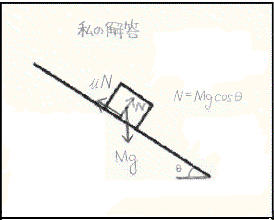
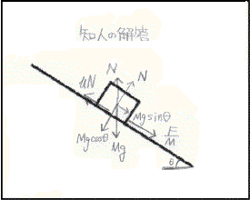

第五なんでやねん・学校の恐ろしい話
私の通っていた高校は、県下でも有数（？）のすばらしい非進学校であった。どの程度の進学率であるかは、高校の入学式にいってみればわかる。私は入学式の当日にいきなり
「お前いま、ガン飛ばしたやろ」
と凄まれたのである。
なんでお前ら、いきなり知らんヤツに闘いを挑むねん。
このように脳味噌まで筋肉で出来ていそうな様子だから、ここが進学校であるはずがないのである。女子生徒のスカートが極端に短いのは当たり前、男子生徒の派閥抗争の中心人物がモヒカンであるなど、まるでマンガのような状態であった。友達などは暴走族のチームを結成して、チームのシールを私にくれたほどだ。シールには「砂墓天」と書かれている。どうやら「サボテン」と読むらしい。このシールごっつ恥ずかしいで!!! どこに張ればええねん！
このような学校でも、大学入試が近づくとそれなりに雰囲気が変わるものだが、変わるのは雰囲気だけで、残念ながら頭の中身は変わっていない。
「東北、学生って英語でなんて言うん？」
おい！ もっとがんばって行こうや(泣)。 中学校で習ったで！
とは言え、これくらいのことで驚いていてはいけない。
例えば数学。証明問題に使う用語というのは自然に身に付くもので、「故に」「ここで」「明らかに」などが主流なのだが、ある知人の答案を見たところ、日常語がふんだんに使用されているのである。
「～と考えたが、失敗である」て書くな！ ミスったことを明確に伝えてどうすんねん。てゆーか、はよ答え導けや！
「さて」もやめろ！ なんで気分転換してんねん！ どこへ行ってまうねん！
計算どころか積分記号 ∫ まで間違えている。∮
何やらゴージャスな積分である。
無論、最後の最後まで間違いは続く。私の答案では「よって明らかに
与式 <0 である」が結論だが、彼の答案では「よって朗らかに
与式<0 である」となっている。結論だけ強引につじつまを合わせるのはともかく、なに朗(ほが)らかに証明してんねん！ さわやかでも偏差値変わらんで！ 模試採点者の爆笑する姿が目に浮かぶわ。 解っていない者はとことんわかっていない。国語からやりなおしなのである……。
物理をやらせても同じようなものである。力学で、物体が受ける物理力を図示する問題が出たのだが、以下が私と友人の答案である。

物体潰れるわ！ 力加えすぎやで！ 正体不明の未知のエネルギーかかっとるやん。
ムリに幽霊やオバケを持ち出さずとも、私の学校は色々な意味で「怖い」場所だったのである。 （完）
第六なんでやねんへ なんでやねん目次へ ＨＰトップに戻る